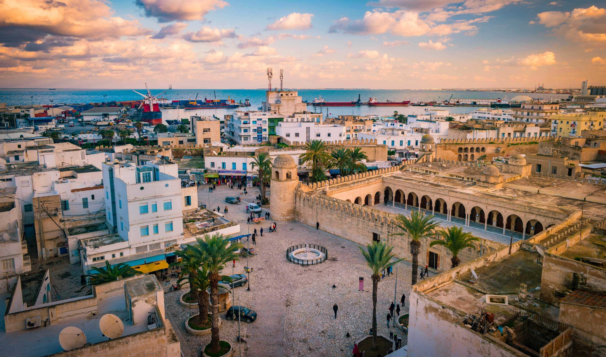

- Nabeul:
- Sousse:
Sousse est une ville portuaire de l'Est de la Tunisie, située à 143 kilomètres au sud de Tunis, et ouverte sur le golfe d'Hammamet (mer Méditerranée). Capitale du Sahel tunisien — elle est parfois surnommée la « perle du Sahel » — et chef-lieu du gouvernorat du même nom, elle est la troisième municipalité du pays après Tunis et Sfax, et la quatrième agglomération, Nabeul étant la troisième. La médina de Sousse est inscrite au patrimoine mondial de l'Unesco depuis 1988.
- Tunis:
Tunis est la ville la plus peuplée et la capitale de la Tunisie. Elle est aussi le chef-lieu du gouvernorat du même nom depuis sa création en 1956. Située au nord du pays, au fond du golfe de Tunis dont elle est séparée par le lac de Tunis, la cité s'étend sur la plaine côtière et les collines avoisinantes. Son cœur historique est la médina, inscrite au patrimoine mondial de l'Unesco. Bourgade modeste placée dans l'ombre de Carthage, Kairouan puis Mahdia, elle est finalement désignée comme capitale le 20 septembre 1159 (5 ramadan 554 du calendrier musulman), sous l'impulsion des Almohades, puis confirmée dans son statut sous la dynastie des Hafsides en 1228 et à l'indépendance du pays le 20 mars 1956. Tunis est la capitale économique et commerciale de la Tunisie. La densité de son réseau routier, autoroutier et sa structure aéroportuaire en font un point de convergence pour les transports nationaux. Cette situation est issue d'une longue évolution, en particulier des conceptions centralisatrices qui donnent un rôle considérable à la capitale et tendent à y concentrer à l'extrême les institutions.
- Sfax:
deuxième ville et centre économique de Tunisie, est une ville portuaire de l'est du pays située à environ 270 kilomètres de Tunis. Riche de ses industries et de son port, la ville joue un rôle économique de premier plan avec l'exportation de l'huile d'olive et du poisson frais ou congelé. Sfax est une cité d'affaires et compte certains sites à vocation touristique, tels que la médina et Thyna, malgré la présence des usines de traitement du phosphate.
- Kairouan:
Kairouan est une ville du centre de la Tunisie et le chef-lieu du gouvernorat du même nom. Elle se situe à 150 kilomètres au sud-ouest de Tunis et cinquante kilomètres à l'ouest de Sousse. Peuplée de 139 070 habitants en 20141, elle est souvent désignée comme la quatrième ville sainte (ou sacrée) de l'islam et la première ville sainte du Maghreb4,5. Première ville arabe d'Afrique du Nord6, la ville a été un important centre islamique de l'Afrique du Nord musulmane, l'Ifriqiya, jusqu'au xie siècle. Avec sa médina et ses marchés organisés par corporations à la mode orientale, ses mosquées et autres édifices religieux, Kairouan est inscrite depuis 1988 sur la liste du patrimoine mondial de l'Unesco. En 2009, elle est proclamée capitale de la culture islamique par l'Organisation du monde islamique pour l'éducation, les sciences et la culture7. La ville est aussi réputée pour ses tapis de laine artisanaux et ses pâtisseries dont les makrouds.

- Bizerte:
Bizerte est une ville du nord de la Tunisie située entre la mer Méditerranée et le lac de Bizerte. Elle est le chef-lieu d'un gouvernorat peuplé de plus d'un demi-million d'habitants. La ville compte 136 917 habitants en 2014.

Envoyer moi un mail pour plus d'information.
Voici un clin d'oeil sur la beauté de la Tunisie